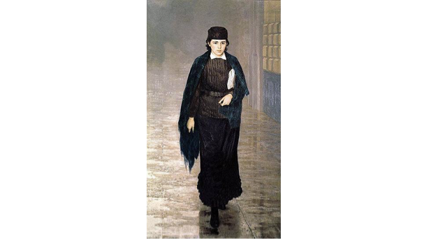
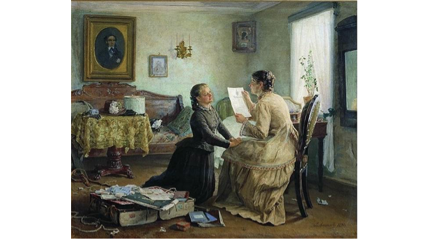

Women's Emancipation

The concept of women’s emancipation refers to the 19th-century, European-wide phenomenon of expanded civic rights, education, and financial independence, as well as the philosophical discourses surrounding it. In Anna Karenina, Tolstoy engages with the concept of women’s emancipation polemically; he is critical of the movement, especially its most radical manifestations. Although Russian writers began discussing women’s emancipation in the 1830s, Tolstoy in Anna Karenina most clearly appears to engage with the discourse on the “woman question” of the 1860s, with authors like Nikolai Dobrolyubov and Nikolai Chernyshevsky. The animating concept of these more radical figures (often categorized as nihilists) was the “emancipation of the person,” from all arbitrary authority, including “near-absolute authority” of husbands and fathers (Engels 60). Tolstoy did not view the family unit and traditional gender roles as oppressive or tyrannical; on the contrary, Tolstoy’s literature conveys the message that women reach their highest potential as dutiful wives and mothers.
The clearest evidence of Tolstoy’s attitude towards the topic of women’s emancipation is his treatment of Anna’s plot arc. Anna chooses her passion over family duties; she leaves her husband and son to pursue a love affair with Vronsky. But even after she bears Vronsky’s child, she defers the child-rearing to a team of nurses who breastfeed, care for, and acquaint themselves with the child in place of Anna. All of Anna’s efforts to fulfill herself outside of maternity fail; her attempts to write a children’s book, aid in Vronsky’s philanthropic endeavors, and educate an English orphan are all aborted, and the affair that drove her to leave behind her family ends in rejection and heartbreak. Meanwhile, Kitty is peacefully married to Levin, and by the end of the novel, has borne his first child, whom she breastfeeds and knows intimately. Anna’s failure to find fulfillment in family and motherhood ends in tragedy, and in more subtle ways, so do the trajectories of other childless women in the novel. As Goscilo writes in her essay on the subject, “For Tolstoy, marriage is a prelude to family, the optimal unit for human existence and social organization, faute de mieux, since the single state eventually conduces to desiccation (Varenka, Koznyshev), childlessness results in the stasis of frivolity, ... while full-time engagement in sociopolitical and religious causes leads to patina and falsity ([Madame] Stahl, Lydia Ivanovna)” (Goscilo 87). Childless characters, like Varenka and Madame Stahl, serve as cautionary tales. Varenka does not have her own family; instead, she serves as a companion to the elderly and sick, including Madame Stahl, the woman who adopted her. Madame Stahl, as well, has no biological children, and she has devoted her life to evangelical Christianity. By the end of the novel, Varenka’s life path elicits pitiful concern from Kitty, and Madame Stahl, once the object of Kitty’s great admiration, seems to Kitty shallow and self-serving. There is no fulfillment for the single or childless woman, Tolstoy makes clear, and no occupation or purpose outside the family can replace the duties of wife and mother. Tolstoy most explicitly engages with the discourse on women’s emancipation through a conversation at Oblonsky’s dinner party (Part 4, Chapter 10). At the party, Koznyshev and Pestov, both fashionable Moscow intellectuals, engage in high-minded socio-political discussions with Karenin, while Oblonsky, Turgenevov, and Dolly occasionally interject. Pestov eventually raises the question of women’s emancipation, to which he responds in favor. He argues that women are owed the education, rights, and duties of men; the difference between men and women is not their mental fitness, but women’s long subjugation. Karenin disagrees — he is skeptical that women are qualified to assume the civic duties entrusted to men — and, fearing that education will inevitably lead to women’s assimilation into civil life, he argues against women’s education. Prince Scherbatsky, in turn, agrees with Karenin that women are essentially ill-suited to civic duties. He analogizes a woman's desire to pursue an education and profession to a man seeking a role as a wet nurse. The difference between men and women is essential, in his view, and women are simply less intelligent than their male peers. Although Tolstoy’s view on women’s emancipation is definitely conservative — he does not think that women should have intimate relationships or occupations outside of the immediate family — he has a higher estimation of women’s innate capacities than Prince Shcherbatsky’s. Women, like all individuals in Tolstoy’s view, are the subjects of their own, free moral choices. For this reason, a woman’s attitude toward the family should not be imposed by an authority from above, like Madame Stahl’s belief that God compels her to live a charitable life. Rather, dedication to one’s family must be a decision that a woman makes for herself, as Kitty does through a process of character development that leads her to choose Levin over a single, childless life devoted to God. Tolstoy’s view on women’s emancipation is conservative, but it is clear from the text that he views women as capable of making their own moral decisions.
Works Cited
- Engel, Barbara. "The 'Woman Question,' Women's Work, Women's Options." Dostoevsky in Context, edited by Martinsen DA and Maiorova O, Cambridge University Press, 2016, pp. 58–65.
- Goscilo, Helena. "Motif-Mesh as Matrix: Body, Sexuality, Adultery, and the Woman Question." Approaches to Teaching Tolstoy's Anna Karenina, edited by Liza Knapp and Amy Mandelker, Modern Language Association of America, 2003, pp. 83–89.